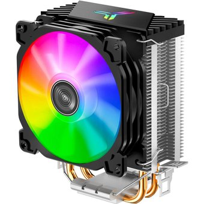

| Componente | Imagen | Descripcion |
|---|---|---|
| Placa base / tarjeta madre o motherboard |  |
Tambien conocida como placa madre o placa principal (motherboard o mainboar), es una tarjeta de circuito impreso a la que se conectan los componentes que constituyen la computadora. |
| Memoria Ram |  |
Ram son las siglas de Random Access Memory un tipo de memoria de ordenador a la que se puede acceder aleatoriamente; es decir, se puede acceder a cualquier byte de memoria sin acceder a los bytes precedentes. |
| Disipador |  | Ram son las siglas de Random Access Memory un tipo de memoria de ordenador a la que se puede acceder aleatoriamente; es decir, se puede acceder a cualquier byte de memoria sin acceder a los bytes precedentes. |
| Componente | Imagen | Descripcion |
|---|---|---|
| Placa base / tarjeta madre o motherboard | |
Tambien conocida como placa madre o placa principal (motherboard o mainboar), es una tarjeta de circuito impreso a la que se conectan los componentes que constituyen la computadora. |
| Memoria Ram | |
Ram son las siglas de Random Access Memory un tipo de memoria de ordenador a la que se puede acceder aleatoriamente; es decir, se puede acceder a cualquier byte de memoria sin acceder a los bytes precedentes. |
| Disipador | Ram son las siglas de Random Access Memory un tipo de memoria de ordenador a la que se puede acceder aleatoriamente; es decir, se puede acceder a cualquier byte de memoria sin acceder a los bytes precedentes. |